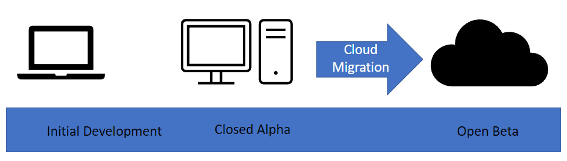

↸ Back to top
Plans and Progress
Initial Data Seeding
As the projects Phase 1 aim is limited to the Perth area, we must be able to provide data to the users to kick start organic growth. Initially it was thought that web information could be scraped from a source like Google maps, but this prompted some ethical considerations once it was realised that the same thing could happen with the data that we are holding. Consideration is given to budget when deciding how best to collect this data. Pursuit of Hoppiness is a small operation and can ill afford to send its staff out on beer hunting missions during the limited available time to produce a proof of concept product. A number of market research companies exist within the Perth area that support the hospitality sector. This work could be outsourced to a market researcher and then ingested into the database to provide a starting point for users.
Google Maps Technology
Google Maps is the preferred map application to use for this product.
Google maps is chosen as it is the most widely supported across multiple platforms and most users will be familiar with its look and feel.
In the initial prototype phase of the product we aim to deliver a small mockup based on static data showing the locations of a number of venues with a brief description. This will help us to decide what important bits of data we can safely display on a mobile device without the screen becoming cluttered.
Post Prototype and for phase 1 we aim to integrate this with data supplied from our backend database. This information will be fetched by the relevant front end application using our API and then displayed on the device. As Google Maps supports a JSON input, this is what our API will provide. It is intended that the front end will provide the location of the map view, this will be passed to the database query which will return a dataset to be formatted into JSON with relevant information for display on the map.
For the purposes of the demo the API key for google maps has been committed to the public repository. The mitigation for this risk is to heavily restrict the key in the google cloud console to the HTTP referrer of the site. While this means that testing may be impacted between individual users, if they need to test on a local machine, they can replace the existing key with a private key of their own and enact their own controls to prevent pushing it to the repository.
The mockup data is currently static. For the Closed alpha release the code will have to be developed to allow incorporation of data from the rest API
A demonstration of the Map formatted as it would display on a mobile screen is provided.
Hosting
For initial testing to reduce costs we have opted for a local machine to host the application data and to deliver the content. The "Box under the desk" approach. A Virtual Private Server arrangement was investigated, but after comparing costs it decided that a migration to an off premise solution would only be appropriate after the completion of the closed alpha testing phase.
Once the decision is made to move to the open beta stage of development, the application data, contant, and code, will be moved to a cloud hosting provider such as google. As our development will be completely containerised, it will be a trivial matter to migrate the entire project to a cloud hosting provider that best suits our needs.
In Summary the application will first be developed on local machines, then hosted in house for rapid testing of deployment pipelines and to reduce costs, then moved to a cloud hosted solution. This will all be based upon certain milestones beign reached within the project.

OpenAuthorization & Logins
When creating an account with our service, we decided we would implement OpenAuthorization so as allow users to join the site through existing accounts such as Google, Facebook and Twitter. Users are also offered the choice to join our application via the standard procedure of creating an account through email and password.
(Refer to UX Prototype below)
Account Data Storage
Account details such as the users ID, OpenAuthorization ID, date of account creation, email used in signup, and hashed passwords (when applicable) will be kept in our database as per below.

User Experience and User Interface
UX (User experience design) and UI (User interface design) are two terms often used interchangeably and although the two are closely linked with some overlap, they are separate areas that have differences in goals and approach.
UX focuses on a user's journey through a product or application whereas UI focus on the aesthetics and visual elements of an application. The goal of a UX designer is to create an easy, efficient, relevant, and all-round pleasant experiences for the user (https://careerfoundry.com/en/blog/ux-design/the-difference-between-ux-and-ui-design-a-laymans-guide/). UI designers work with the wireframe or structure provided by the UX designer and create a visually appealing easy to understand interface (https://youtu.be/5CxXhyhT6Fc).
Initial Research
The first stage in development was choosing the tools and technologies to develop with. Research and comparisons of UI and UX development software led to a focus on Proto.io, InVision and Adobe XD due to their price, ease of use and time to master all being mid or low. After an hour of testing each piece of software the discission was made to move forward with Adobe XD, primarily due to it integrations with other Adobe applications which where already being used to create assets for The Pursuit of Hoppinses.
Before Beginning on the Wireframe for The Pursuit of Hoppinses, several tutorials were worked through to develop skills. Skills also significantly grew during the development process.
UX Planning
The goal of UX is to is to create an easy and efficient flow to allow users to complete their intended goals. The role can often be broken down into 5 phases, audience research, identification of users needs, generation of design ideas, prototyping and testing (https://www.interaction-design.org/literature/article/7-ux-deliverables-what-will-i-be-making-as-a-ux-designer). We identified our target audience as craft beer drinkers and our research produced an audience profile of males primary aged between 30 and 39 (https://takeatumble.com.au/insights/lifestyle/beer-market-statistics/), with the need to find the right bar for them. This led to a more traditional design with an approach that minimized the clicks to viewing venues score to one. Emphasis was also put on Navigation within the app.

The home screen for existing users is the Map page. This screen initially centers on the user, giving them quick access to information of venues around them. It can be navigated similarly to other touch-based maps with pinching to zoom and swiping to move. Location can also be set using the search feature which has a text field for the search location and past searches. The List Page presents venues based on distance. It can be filtered by our four review categories to raise/lower venues depending on preference. The account page allows users to view their past reviews, manage settings an log out. When venues are clicked on the map or searched, they become centered on the map and give information on the venue as well as recent reviews.
Each page features a navigation panel that can be used to quickly move between the Profile, Map and List View.
UX Prototype
The wireframe was made using tools inside XD and the Icons 4 Design plugin. Development of the wireframe was also used as training in XD.
During development of the wireframe, swipe navigation was removed as it wasn’t supported by XD, and the Venue Page was changed to a pop-up box map overlay instead of its own page.
UI Development
When developing the UI for The Pursuit of Hoppiness emphasis was placed on consistency using already established interface elements such as Buttons and sliders as input controls, commonly used search field structures and map functionality and use of already established icons for common functions such as settings and notifications.
To keep the app consistent with existing branding assets were reworked and expanded upon for use within the application. Some generic application symbols, such as the login, settings, notification and login icons, where taken from the Icons 4 Design plugin which allows non-attribution use of 5000 icons and symbols. These icons were colored to match the style guide.
Initial mock-ups of the UI were created in Adobe Illustrator and then imported into the wireframe XD file and worked to replace the wireframe icons. During this process changes were made to the UI and UX to improve functionality. This included moving the radius slider from Search to List and adding additional lines to breaks between sections. Additionally extra artboards were added to add Filter functionality for the prototype.
Final Prototype
The current prototype demonstrates the UI and UX of the application well, with several limitations as a result of XD. Limitations that will be addressed in future prototypes are editable text fields, active sliders, dynamic map and the addition of additional filters (currently only Tap Price is active).
Following feedback from the development team the bottom navigation bar will be move up to allow room for phone navigation icons/buttons, phone battery, time and connection icons will be added to the top of the application, size and amount of text will be reviewed.
Next Stages
The current prototype was designed to the Scope for a minimum viable product and is missing major features that would significantly change the app UX and UI. The two biggest changes would come from the addition of Social Features and Venu Management Features.
Social features including friends, messaging and an activity timeline would be accessible through the Nav bar and would replace the current list button, which would be relocated as a smaller icon next to the search field. This feature would add an additional 5 major screens, Timeline, Friends, Friend Profile, Chat Home and Chat. The UI and layout of these screens will be consistent with the application in line with the style guide and keeping the bottom navigation. Navigation features specific to the social features will be located at the top of the page.

The venue management features will require a significantly different interface and will be a web portal rather than an app. Initially the features will be limited to the ability to edit their venue description and opening hours, reply to comments and view statistics on venue reviews. These features can be introduced with minimal changes in the app UI but future development including a venue timeline and the ability for patrons to make purchases in app will require a rework of the venue page.